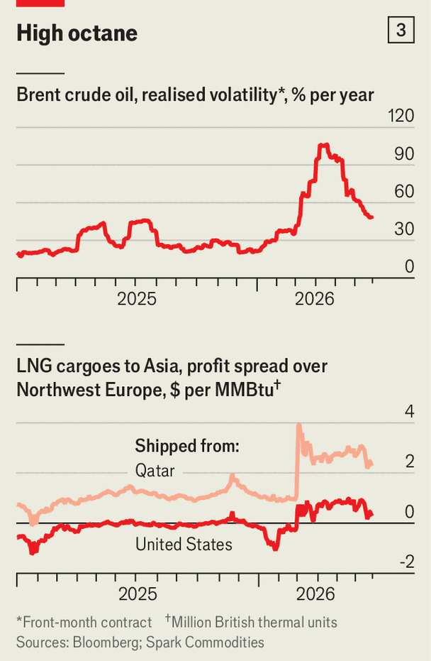

Big oil’s secretive trading arms are having an extraordinary year
Meet the corporate gamblers who never waste a good energy crisis
July 2nd 2026

Oil majors have two ways to make big money during an energy shock. One is to sell the hydrocarbons they pump and refine themselves. The other is to buy barrels that rival companies produce and flog them to whoever wants them the most. The third Gulf war has now demonstrated just how important the latter has become as a source of profit for the industry—particularly in Europe.
Trading used to be the majors’ dirty little secret for topping up their returns. It is not little anymore. The volume of hydrocarbons traded by BP, Shell and TotalEnergies—the equivalent to 40-50m barrels of oil per day—is five to ten times what they produce. Nor is the contribution to their profitability a mere rounding error. Our calculations suggest that the trading arms of these three companies could be on course to increase their average return on capital by roughly a third or more this year.

Yet secretive these activities remain. The majors disclose plenty about their production and distribution businesses. But information about their trading arms is, in effect, classified. Opacity helps protect their competitive edge. Trading profits alone explain why European majors, whose valuations have long trailed those of their American cousins, have outperformed Exxon and Chevron since the end of February (see chart 1). To understand how they mint so much money—and whether it can last—The Economist spoke to a range of insiders from across the industry. Our findings indicate that the golden geese still have eggs to lay. But foxy competitors are circling.
Europe’s trading nous is a product of history and geology. American oilmen always had ample resources and a vast domestic market. European ones, which lacked both, lost their equity stakes in Middle Eastern crude during the nationalisations of the 1970s. That shock forced them to buy third-party barrels rather than just sell their own. BP pioneered trading in the 1980s, when OPEC’s grip on prices collapsed. Amid a glut of cheap oil, the firm began buying barrels it didn’t need, betting it could sell them at a profit. Shell and Total began to grow their own arms through the 1990s, when low oil prices squeezed upstream margins and also pushed the majors to look elsewhere for returns. Trading—which profits from volatility and spreads, not just price levels—became the answer.
The majors’ traders can harness volatility in part because they possess unmatched intelligence on supply, demand and the direction of prices thanks to the vast operations of their employers, encompassing oil and gas fields, refineries, terminals, storage facilities and more. Over the past 15 years the opportunity has expanded. Banks, hamstrung by regulation, have retreated from commodity trading. America’s shale bonanza, Japan’s pivot away from nuclear power and the Russian-gas crisis have also turned liquefied natural gas (LNG) into a booming global market. Traders are still expected to help place their own companies’ “equity” barrels, but their growing contribution to overall profits has bought them greater independence. Around nine-tenths of what they shift now comes from outside the firms.

The Iran war—and the energy crunch it has caused—look set to make this a banner year for trading, even as prices normalise (see chart 2). The majors hide trading profits by bundling them with other units’. But projections we assembled suggest BP, Shell and Total may earn $15bn-20bn in pre-tax profit from trading in 2026. Taking the lower end of that range, and assuming this year resembles 2023—when Brent crude averaged $83 a barrel, roughly in line with current forecasts—trading could come to represent between 15% and 20% of the trio’s combined profits.
Because trading is asset-light, its contribution to return on capital is even greater. Michele Della Vigna of Goldman Sachs, an investment bank, estimates that, from roughly one percentage point in decades past, trading now adds two percentage points to the European majors’ return on capital in a typical year—and perhaps three this year.
What is even more striking than the scale of profits is their resilience. In any other trading business, luck eventually runs out and punters book losses. The majors’ arms, by contrast, “rarely lose money”, says Mr Della Vigna—they just make less in worse years. Three ingredients explain it: a nimble structure, skilled staff and enough firepower to place outsized bets when it counts.
Start with structure. Trading divisions don’t circulate organisational charts. Only BP publicly names who runs the show: Carol Howle, its deputy chief executive—a clear signal that trading is central to the firm. At the others, “trading dots into the chief financial officer”, reckons Alastair Syme of Citigroup, another bank. Below that, the global head of trading oversees leads for each product: crude oil, light ends (petrol), middle distillates (diesel, jet fuel), heavy ends and gas. At the base of the pyramid sit specialists, who may deal exclusively in West African crude or Latin American bitumen.
Most of the team clusters in a global hub: London for BP and Shell, Geneva for Total—though the big boss may be based in Houston or Singapore, depending on the cycle. Regional hubs field specialists with a local Rolodex. There is always someone in Singapore, for example, on first-name terms with Asia’s airlines, refiners and shipowners.
Trading teams are simultaneously large and lean. Each product desk might have 60-70 traders globally, putting divisional headcount in the hundreds. Add shipping, finance and other support staff, and the total reaches one or two thousand for each major—a fraction of their roughly 100,000-strong workforce. That implies a huge profit per head: in a good year that may get close to $10m.
That makes attracting the right people—the second ingredient—essential. Hiring and firing decisions are made independently of the wider firm. Unlike engineers in the core business, ideal recruits love risk and possess a diplomat’s social skills. “Being able to read the unspoken motions that give away people’s positions matters as much as the data provided by the technology of the day,” says a former trading boss, who did plenty of that over long lunches in London’s plush and leafy Mayfair district.
European majors used to lose lots of budding traders to independents like Vitol or Trafigura, which dangle equity ownership tied directly to profits. Vitol distributed billions of dollars among employee-owners after the trading boom following Russia’s invasion of Ukraine in 2022-2023. The majors, as listed companies, cannot match that. But they still reward their staff handsomely. Each year a bonus pool is carved from profits. In a good year, the most senior traders in a firm might earn tens of millions of dollars—above the group chief executive’s pay.
A third factor in the success of the trading arms is the amount of financial firepower at their disposal. Our research suggests each major may be deploying tens of billions of dollars in capital to lubricate trading. When one desk wants more, the request goes to the risk committee, who reallocate from another desk or expand the overall pool.
Ample capital lets traders pounce on arbitrage opportunities when war or pandemics dislocate markets—and dedicated support teams in finance, freight and beyond mean they can move fast. In 2020 many crude traders correctly predicted that, as storage filled up during lockdowns, oil prices would briefly go negative. Treasurers quickly approved funds to lease dozens of tankers in which to store the oil; traders minted fortunes when prices bounced back.

Nasty surprises do happen. Many desks, having bet that oversupply would cause oil prices to fall through 2026, were caught off guard when America and Israel bombed Iran on February 28th. “But then they did what all good traders do,” says Colin Bryce, a former co-head of commodities at Morgan Stanley, another bank. “They liquidated their positions, got on the right side, and played volatility for all it was worth.” As wide price gaps opened between oil of different origins and LNG delivered across distant markets, trading gains rapidly erased early losses (see chart 3). Some traders took bold steps. For instance, Total made more than $1bn after cornering every barrel of Emirati and Omani crude outbound in May that was available to purchase in March.
What of the competition? Previous efforts by America’s oil giants foundered for want of capital and autonomy. Some petrostates tried too, with mixed results: a bad position burning through national treasure quickly attracts political pressure to stop. Yet the American majors, envious of their European rivals, are more determined than ever to catch up, and national oil companies, tired of paying the middleman and eager to diversify revenue, have taken a renewed interest. ADNOC, the Emirati oil giant, as well as Exxon and Phillips 66, another American oil company, have lately been among the biggest recruiters of traders in the world, says Anoush Kefayati of HC Group, an executive-search firm. ADNOC, which has a joint venture with Italy’s Eni and Austria’s OMV, has trading desks in Singapore and Geneva, and it plans to open another in Houston. Saudi Aramco acquired Motiva Trading, a Texas-based merchant, in 2023.
Despite this, closing the gap with the Europeans could still take years. “It’s like a Formula One team,” says Mr Kefayati. “You do a race, you come back, you evaluate the data, you make hard decisions, you go into another race. It takes so many cycles to get it right.”
The bigger immediate threat comes from the large independent trading firms. Having amassed enormous amounts of cash in 2022-23, they have since bought billions of dollars in assets, from LNG terminals to fuel-retail networks. Europe’s majors, meanwhile, have offloaded $77bn in assets since 2019, under pressure to slim portfolios and cut emissions, notes Rystad Energy, a consultancy. As a result, their informational edge is slowly eroding. Private traders can also chase opportunities that, though legal, may be deemed too risky by listed majors, such as those involving countries partly or previously covered by sanctions. When Donald Trump wanted to shift Venezuelan barrels in January, it was Trafigura and Vitol he called. “It was ultra-thick oil that had been sitting there for years, on rotting ships,” explains a well-connected financier. “Only they could get it moving.”
One defence for the in-house desks is to better use the intelligence they receive. They have invested huge sums on software that suggest trades based on the data at their disposal. Another is to do more “origination”—financing producers in exchange for long-term supply agreements, which brings captive barrels and market intelligence. In January Total announced that it had struck a deal with Bahrain to jointly trade the output of the country’s sole refinery without owning the asset.
In the coming years geopolitical ructions and extreme weather will leave ample room for traders at BP, Shell and Total to make a handsome profit. For now, that will help the European majors’ to stay competitive. In time, however, intensifying rivalry in the trading business may cause those profits to dwindle. The engineers, not the dealmakers, may find themselves ascendant once again. ■
To track the trends shaping commerce, industry and technology, sign up to “The Bottom Line”, our weekly subscriber-only newsletter on global business.